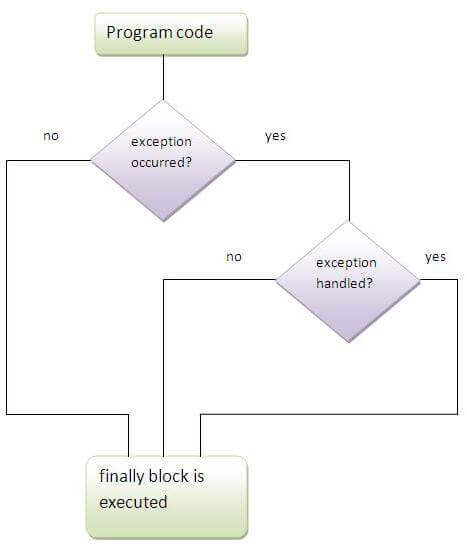

There are the following differences between compile-time polymorphism and runtime polymorphism.
| compile-time polymorphism | Runtime polymorphism |
|---|---|
| In compile-time polymorphism, call to a method is resolved at compile-time. | In runtime polymorphism, call to an overridden method is resolved at runtime. |
| It is also known as static binding, early binding, or overloading. | It is also known as dynamic binding, late binding, overriding, or dynamic method dispatch. |
| It provides fast execution because the type of an object is determined at compile-time. | It provides slower execution as compare to compile-time because the type of an object is determined at run-time. |
| Compile-time polymorphism provides less flexibility because all the things are resolved at compile-time. | Run-time polymorphism provides more flexibility because all the things are resolved at runtime. |
In case of the static binding, the type of the object is determined at compile-time whereas, in the dynamic binding, the type of the object is determined at runtime.
Static binding
Dynamic binding
The instanceof in Java is also known as type comparison operator because it compares the instance with type. It returns either true or false. If we apply the instanceof operator with any variable that has a null value, it returns false. Consider the following example.
The output of the above code will be
An object of subclass type is also a type of parent class. For example, if Dog extends Animal then object of Dog can be referred by either Dog or Animal class.
Abstraction is a process of hiding the implementation details and showing only functionality to the user. It displays just the essential things to the user and hides the internal information, for example, sending SMS where you type the text and send the message. You don't know the internal processing about the message delivery. Abstraction enables you to focus on what the object does instead of how it does it. Abstraction lets you focus on what the object does instead of how it does it.
In Java, there are two ways to achieve the abstraction.
Abstraction hides the implementation details whereas encapsulation wraps code and data into a single unit.
A class that is declared as abstract is known as an abstract class. It needs to be extended and its method implemented. It cannot be instantiated. It can have abstract methods, non-abstract methods, constructors, and static methods. It can also have the final methods which will force the subclass not to change the body of the method. Consider the following example.
The output is
The interface is a blueprint for a class that has static constants and abstract methods. It can be used to achieve full abstraction and multiple inheritance. It is a mechanism to achieve abstraction. There can be only abstract methods in the Java interface, not method body. It is used to achieve abstraction and multiple inheritance in Java. In other words, you can say that interfaces can have abstract methods and variables. Java Interface also represents the IS-A relationship. It cannot be instantiated just like the abstract class. However, we need to implement it to define its methods. Since Java 8, we can have the default, static, and private methods in an interface.
No, because methods of an interface are abstract by default, and we can not use static and abstract together..
No, because an interface needs to be implemented by the other class and if it is final, it can't be implemented by any class.
A class can be made read-only by making all of the fields private. The read-only class will have only getter methods which return the private property of the class to the main method. We cannot modify this property because there is no setter method available in the class. Consider the following example.
A class can be made write-only by making all of the fields private. The write-only class will have only setter methods which set the value passed from the main method to the private fields. We cannot read the properties of the class because there is no getter method in this class. Consider the following example.
There are the following advantages of Encapsulation in Java
There is given a list of exception handling interview questions with answers. If you know any exception handling interview question, kindly post it in the comment section.
There are mainly two types of exceptions: checked and unchecked. Here, an error is considered as the unchecked exception. According to Oracle, there are three types of exceptions:
Exception Handling is a mechanism that is used to handle runtime errors. It is used primarily to handle checked exceptions. Exception handling maintains the normal flow of the program. There are mainly two types of exceptions: checked and unchecked. Here, the error is considered as the unchecked exception.
The java.lang.Throwable class is the root class of Java Exception hierarchy which is inherited by two subclasses: Exception and Error. A hierarchy of Java Exception classes are given below:

The classes that extend Throwable class except RuntimeException and Error are known as checked exceptions, e.g., IOException, SQLException, etc. Checked exceptions are checked at compile-time.
The classes that extend RuntimeException are known as unchecked exceptions, e.g., ArithmeticException, NullPointerException, etc. Unchecked exceptions are not checked at compile-time.
The "finally" block is used to execute the important code of the program. It is executed whether an exception is handled or not. In other words, we can say that finally block is the block which is always executed. Finally block follows try or catch block. If you don't handle the exception, before terminating the program, JVM runs finally block, (if any). The finally block is mainly used to place the cleanup code such as closing a file or closing a connection. Here, we must know that for each try block there can be zero or more catch blocks, but only one finally block. The finally block will not be executed if program exits(either by calling System.exit() or by causing a fatal error that causes the process to abort).
Garbage collection is a process of reclaiming the unused runtime objects. It is performed for memory management. In other words, we can say that It is the process of removing unused objects from the memory to free up space and make this space available for Java Virtual Machine. Due to garbage collection java gives 0 as output to a variable whose value is not set, i.e., the variable has been defined but not initialized. For this purpose, we were using free() function in the C language and delete() in C++. In Java, it is performed automatically. So, java provides better memory management.
The finalize() method is invoked just before the object is garbage collected. It is used to perform cleanup processing. The Garbage collector of JVM collects only those objects that are created by new keyword. So if you have created an object without new, you can use the finalize method to perform cleanup processing (destroying remaining objects). The cleanup processing is the process to free up all the resources, network which was previously used and no longer needed. It is essential to remember that it is not a reserved keyword, finalize method is present in the object class hence it is available in every class as object class is the superclass of every class in java. Here, we must note that neither finalization nor garbage collection is guaranteed. Consider the following example.
| final | finally | finalize |
|---|---|---|
| Final is used to apply restrictions on class, method, and variable. The final class can't be inherited, final method can't be overridden, and final variable value can't be changed. | Finally is used to place important code, it will be executed whether an exception is handled or not. | Finalize is used to perform clean up processing just before an object is garbage collected. |
| Final is a keyword. | Finally is a block. | Finalize is a method. |